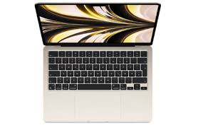
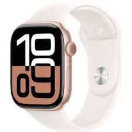

Айфон

iPhone 17 — це майбутня лінійка смартфонів Apple, яку очікують у 2025 році.
Основні нововведення включатимуть чип A19, 120-герцові дисплеї ProMotion у всіх моделях (навіть базових),
покращені камери на 48 Мп, нові версії iOS з розширеними функціями ШІ та оновлений дизайн, зокрема, найтонший iPhone 17 Air в історії.
Перейти щоб купити
Ноут

MakBook — це лінійка ноутбуків від компанії Apple, яка працює на операційній системі macOS.
Ці ноутбуки, представлені в основному у двох серіях — MacBook Air та MacBook Pro, вирізняються елегантним дизайном,
високою продуктивністю та зручні для роботи з графікою, відео та розробкою програмного забезпечення.
Перейти щоб купити
Годинник

Apl Watch — сучасний розумний годинник, що поєднує стильний дизайн і багатофункціональність.
Він допомагає стежити за здоров’ям і активністю: вимірює пульс, рівень кисню в крові, відстежує тренування та сон.
Завдяки повідомленням, дзвінкам і підтримці додатків, Apple Watch зручно замінює телефон у повсякденних ситуаціях.
Це не лише аксесуар, а й надійний помічник для спорту та роботи.
Перейти щоб купити